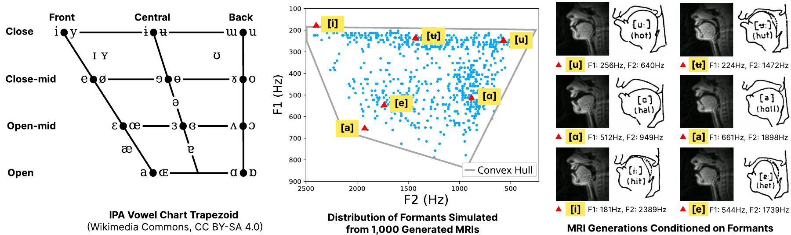

NeurIPS 2026 · Spotlight
Reconstructing the Vocal Tract with Differentiable Acoustic Simulation - Interactive Web Demo
1MIT CSAIL 2MIT RLE 3KAIST GSCT
diffTLM is a differentiable and GPU accelerated acoustic tube simulator for the vocal tract. The differentiable simulator synthesizes speech by propagating sound along an acoustic tube model of the vocal tract, and via its gradients, can reconstruct the shape of the vocal tract from the sound it produces.
This demo runs entirely in your web browser via WebGPU! Everything is run locally and no data is stored.

Motivation
Learning to speak is an inverse problem. An infant babbles to discover the non-linear mapping between their articulatory motor commands and their speech, learning the controls required to produce language. Most remarkably, children solve this inverse problem without ever seeing paired data between the muscle configuration of their vocal tract and the speech it produces.
In robotics, this type of sensorimotor learning is accelerated by differentiable simulators such as Mujoco MJX, Taichi and Warp. These simulators allow gradients from a physical environment to backpropagate directly to a policy, enabling efficient learning of locomotion and manipulation. But to learn the physical actions of your mouth, tongue, etc. that form language, no equivalent computational infrastructure exists. Our differentiable simulator provides the infrastructure to study speech as a physically-grounded learning problem.
Acoustic Tubes
Although the space of all possible speech sounds is large, the vocal tract's geometry moves in relatively fewer dimensions over time. We model the vocal tract as an acoustic tube, a one-dimensional tube whose cross-sectional area varies along its length. Changes in the tube's shape causes changes in its acoustic properties, allowing for the formation of different vowels and consonants
We find that simulation in the frequency domain enables parallel evaluation across frequencies and short-time analysis windows, delivering a 70x speedup over time-domain wave solvers on an RTX 4090. Frequency-domain synthesis also yields a significantly smoother optimization landscape for gradient descent.
Explore how different tube geometries produce different vowels below! We can fit the area of the tube to a speech sample using gradient descent. The geometry is parameterized by a Multiplicative Filter Network (MFN), a type of neural field. Neural fields, and neural networks more generally, implicitly regularize deformations across space and time, allowing gradient descent to recover smooth kinematic trajectories without hand-crafted regularizers.
Vocal Tract Shape
Drag either outline to editFrequency Response
Choose a target vowel, then click fit.
Estimate pitch
Real Speech Optimization WebGPU Demo
Below we provide a web demo where you can fit your own speech samples with our simulator! Both the forward and backward pass of our simulator are implemented in WebGPU. The code was ported from our Python implementation with the help of coding agents.
If the demo doesn't work, try using Chrome, which we found can be 2x faster than Firefox or Safari.
Record up to 10 seconds, then listen before fitting. Audio stays in your browser.
Optimization & model options
Fit the waveform to estimate moving vocal tract geometry.
Tract Profile
Area Heatmap (Time)
Constriction → OpenOriginal Audio
Reconstruction
Mel-STFT Loss
Spectrogram Comparison
ReadyTarget
Reconstruction
Hey Jude · The Beatles
Original recording ↗OMG · NewJeans
Original recording ↗Generating Dynamic Vocal Tract MRI
diffTLM can also interface with visual generative models. We differentiably extract the cross-sectional area of the vocal tract from the generated video, then pass the geometry to our simulator to synthesize speech. Gradient propagation through the simulator and the MRI generator fits the MRI to the target audio.
Reference MRI and Audio
Reconstructed MRI and Audio
Acoustic Tubes as a Neural Representation
We also investigate how acoustic tubes can be used as a neural representation. We train an autoencoder on LibriTTS to encode speech into area functions, which are decoded into speech using diffTLM. Because no paired data is required between speech and vocal tract kinematics, the entire process is self-supervised. On the right we project encoded area functions onto a 2D UMAP projection. We find that the area functions groups similar phonemes together. Consonants such as /s/ and /k/ are clustered on the right, while vowels like /a/ are clustered on the left.

Finally, we explore the space of vowels sampled from our MRI generator. We plot the first two formants simulated from 1,000 generated MRIs, and observe that they form a convex hull, similar to the space of vowels in the IPA chart. Our learned representations align well with the existing linguistics literature, and we hope that this work will enable future work in language, sensorimotor control and more!

Citation
@inproceedings{Chen2026DiffTLM,
author = {Chen, Eric Ming and Lee, Jin Woo and Sitzmann, Vincent},
title = {Reconstructing the Vocal Tract with
Differentiable Acoustic Simulation},
booktitle = {Advances in Neural Information Processing Systems},
year = {2026}
}